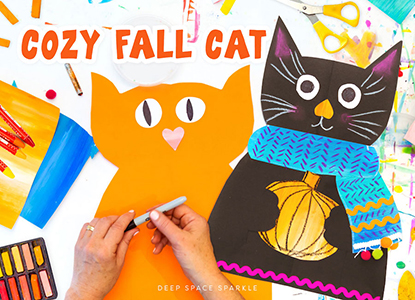

This project is inspired by artist, Ryan Conners. Here’s a link to Ryan’s website where you’ll find her original works of art. The project has many opportunities for children to create their own unique cat, either by changing that cat’s paper color or deciding what type of object the cat will hold. Ryan’s artwork features many latte’s but perhaps a steaming cup of hot cocoa would be a better option for kids.
CRAFTS

Cozy Fall Season Cat
THIS IS WHAT YOU'LL NEED:
- 12" x 18" black paper
- - White oil pastel or crayon
- - Scrap piece of white paper (for eyes)
- - 12" x 9" painted paper or colors paper for scarf
- - 6" x 6" scrap paper for object (orange paper for pumpkin)
- - Oil pastels for detail work
- - Pink chalk pastel
- - *optional Rick-Rack and Pom-Poms
- - Scissors
- - Tape
- - Glue Stick
Cutting Out The Cat
- Fold the black paper in half lengthwise. With the fold facing the center, draw a curved line for the top of the cat’s head. Add an ear and cheeks. Children can stop short or draw all the way to the folded line.
- Draw the cats body by starting at the cheeks, drawing a curved line towards the edge (how far determines how thick the cat will be) and then down off the bottom edge of the paper.
- Cut out shapes with scissors.
- Open up the flatten out.
Making The Pumpkin
- On the 6″ x 6″ orange paper, draw a pumpkin. Make sure the pumpkin fits inside the cats body. It shouldn’t be too big or else the paws won’t be able to hold on.
- Cut out the pumpkin and set aside for now.
Making The Paws
- Place pumpkin over body. With a white pastel, make a small mark next to the thickest part of the pumpkin.
- Remove pumpkin. Fold cat in half and notice where the pumpkin mark is. Draw a curved line to mimic a cat’s paw (letter C). The round part of the “C” should face the folded part of the paper.
- Draw a line down to the bottom of the cat (refer to handout)
- Cut along white line.
Adding The Pumpkin And Face
- Open up cat and insert the pumpkin between the cat’s paws. It may take some wiggling to get it right. Turn over the cat carefully and tape pumpkin in place.
- Now’s a good time to tape the cat together below the paws. Do this on the BACK of the cat’s body.
- Cut out two eyes from the white paper and draw and color the pupils. Add a nose and mouth with the white oil pastel. Use the pastel to add whiskers and eye lashes.
- Use chalk pastel to add color inside the ears and add color to the cheeks.
Adding The Scarf And Embellishments
- Place the large sheet of painted paper over the cat’s body just below the chin. Make a mark where the cat’s body ends. This is how wide to draw the scarf.
- The scarf is in two sections: the wrap and the tail. The wrap can have rounded corners and the tail can be curved to show movement. Glue the tail first then the wrap.
- Decorate with pom-poms and oil pastel.
- Use rick-rack, painted paper strips or anything you might have on hand to decorate the cat’s body.
YOU'RE DONE! :D
Treats
this is p1
- hi
this is p3